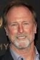

País:Estados Unidos, 86 minutos.
Idiomas:Inglés
GénerosTerror, Drama
Director/es:Diederik Van Rooijen
Guionistas:Brian Sieve
Códec de vídeo:Unknown
Número: 219


Certificación:R
Argumento:
Un policía que acaba de salir de rehabilitación comienza a trabajar en una morgue del hospital de la ciudad. Poco a poco, irá descubriendo una serie de extraños y violentos sucesos causados por una entidad maligna que procede de uno de los cadáveres.
Reparto 
Medio: Archivo de video,
Localización: D:\Multimedia\Películas\The Possession of Hannah Grace (2018)\The Possession of Hannah Grace (2018).mkv
Prestado: No
Rel. aspecto: Unknown